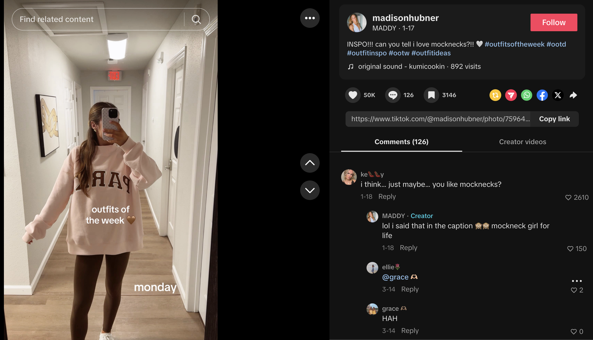
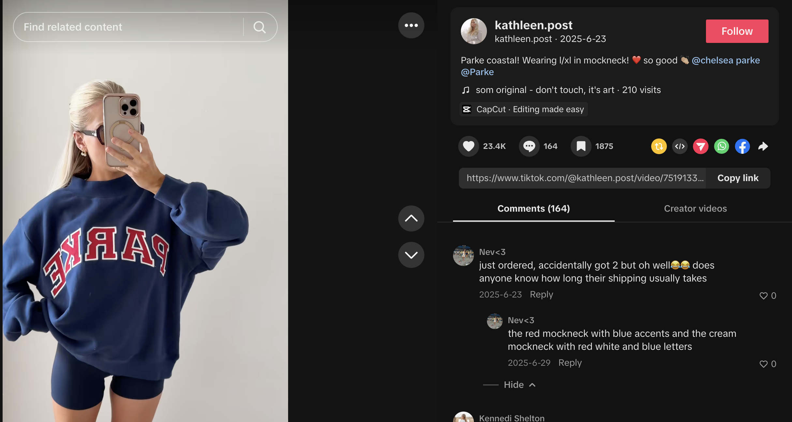
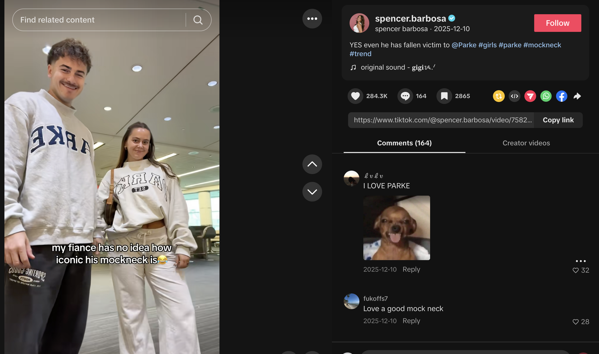

6. TikTok Data Visualizations
To better understand how the mock neck trend performs on TikTok, we analyzed two scraped datasets: one focused on general mock neck content and one focused specifically on PARKE-related posts. These visuals highlight patterns in engagement and caption language to show how the trend spreads and what kinds of posts perform best.
Average Engagement by Dataset
This chart compares the average views, likes, and comments across general mock neck TikToks and PARKE-specific TikToks.
Most Common Caption Themes
These themes show the kinds of words and reactions that appear most often in mock neck TikTok captions.
Engagement Rate Comparison
This chart compares engagement rates (likes and comments relative to views) to show which dataset creates stronger audience interaction.
Top 10 TikToks by Views
This chart highlights the highest-viewed posts across both datasets to show which types of mock neck videos performed best.
Key Insights
Across both datasets, higher engagement is not just about views — it is about how often people interact with the content. This reinforces how social media trends are driven not only by visibility, but by repeated interaction and audience response.
Real TikTok Examples
These screenshots show how the mock neck trend appears in actual TikTok content. Each example connects back to the patterns we saw in our data, including strong engagement, repeated caption language, and audience comments that recognize the trend.

General Mock Neck Content
This example shows how mock necks appear in everyday outfit content. The caption and comments help show how viewers recognize repeated styling patterns.

PARKE-Specific Content
This post connects directly to PARKE and shows how brand-specific mock neck content can generate strong engagement through comments, likes, and saves.

High-Engagement Example
This example shows a highly visible PARKE-related post with strong audience interaction, supporting our finding that certain mock neck posts gain traction through both humor and recognition.